РЕПОРТАЖА · ТЕРА МАДРЕ 2022
Пет дена во Торино
Чиста егзотика од луѓе, храна и спомени
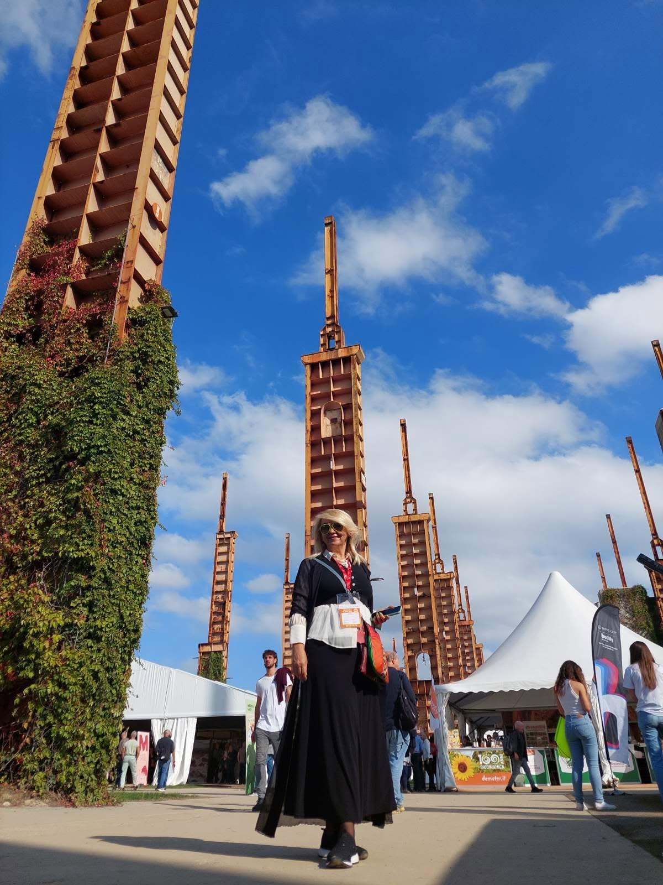
Се насладувам со мислите што уредно ги преработувам и се подготвувам да ги наречам „спомени од Торино“, поточно од Тера Мадре, или најточно — Слоу фуд Македонија на најголемиот саем на храна, гастрономија и земјоделство. Со доза на автоиронија, бидејќи наслутувам плима од емоции, знам дека секое искуство допрва треба да се изживее. Или — отсонува? Или и едното и другото?
01
Осумнаесет часа кон една авантура
Сè започна и заврши пред Дрво декор, култното место за тргнување на пат. Го наполнивме автобусот, целата (скоро) македонска мрежа на Слоу фуд сме, а нè чека патешествие долго 1.600, пардон, 1.800 километри. Николче, Елена, Матеј, Наско, Дамјан, Билјана, Сашко, Јасна, Анита, Дичо, Македонка, Марјан, Иво, Филип, Наташа Пирустија, Кристијан, Сезер, повторно Елена, Гоце, Владо, Здравко, Драгче, Пеце, Димитар, Дарко, Даме, Тоци, Наташа, Васил… вооружени со планови, насмевки и полни торби грицкалици и сендвичи, тргнавме во авантура.
Патот беше дооооолг, лека-полека избледеа муабетите, се испразнија кесичињата со кои шушкавме како глувци во потрага по ноќна ужинка, па и кога стигнавме во Венеција, со одмор од неколку часа — време што е потребно автобусот да „одлежи“ — беше повеќе од предизвик. Кога повторно влегов во „реизот“, си реков, ова ќе мора машки да се издржи. Плус, септември ми е омилен: сонцето гали, ама и го најавува заминувањето и токму поради скорешната разделба, секој зрак е уште подрагоцен…
Во Торино стигнуваме ноќе, времето веќе и не е важно, хотелот е плус 23 километри и е ретро шик од 70-тите. Уморот ни е заеднички именител, па иако не ги сакам родовите поделби, констатирам дека како жена имам помала физичка издржливост. Ха, или обратно беше?
И што е логично да се случи?
Успивање, што го нареков „феномен“, затоа што ги фаќам сите зазорувања — утрински, најутрински тип сум. Ама и покрај првичната неверица и изненадување, си рековме: ете го Торино. И се подготвивме за авантура. И навистина беше.
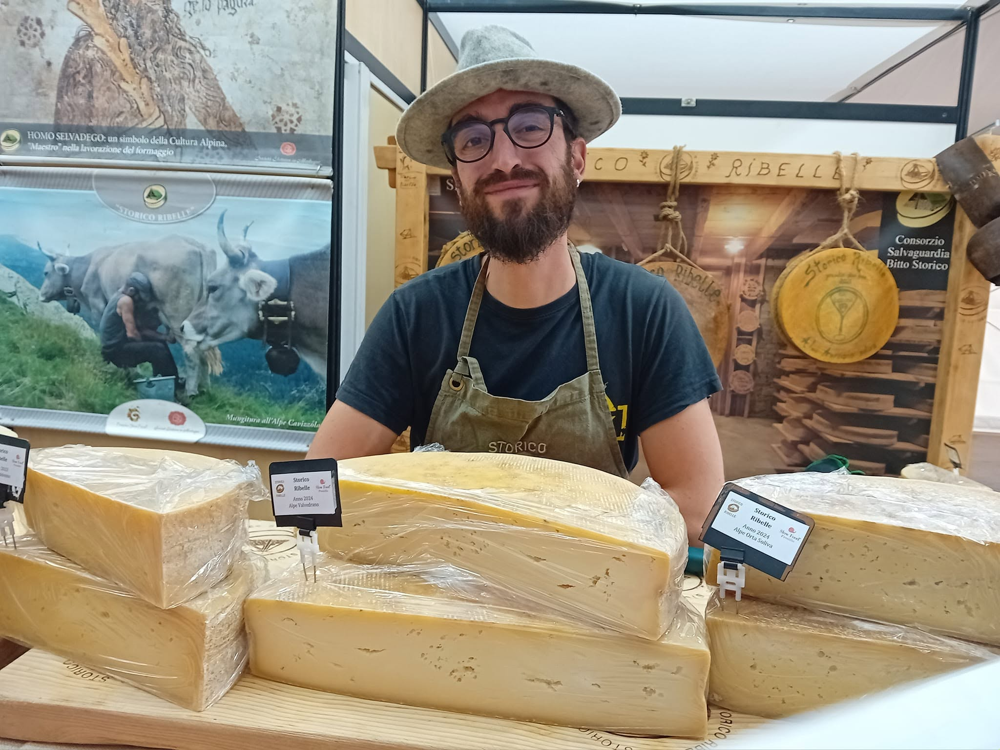
02
Ете го Торино
Што поради оддалеченоста, што поради лош ксмет, со Италијанците едвај се разбравме како да стасаме до целта. Првин со воз, потоа со автобус, па некако се приближи паркот Дора, каде по 14-ти пат се случува Тера Мадре. Прекрасен настан: автентична храна од целата планета на оваа некогашна индустриска зона, 130 земји, 700 изложувачи, импресивно… Првата станица е прес-центар: уредно се пријавуваме, земаме акредитации и го бараме павилјонот на Македонија.
Колку што го бараме павилјонот, толку возбудата е поголема. Кога си надвор од земјата, ти трепери душата на сè македонско: има некои тајни кодови што душата ги препознава по генот. А да не правиме муабет дека во мене тоа е уште подоминантно: во градите ми трепери славното Смилево.
И ете сме!
Кога си надвор од земјата, душата ти трепери на сè што е македонско.
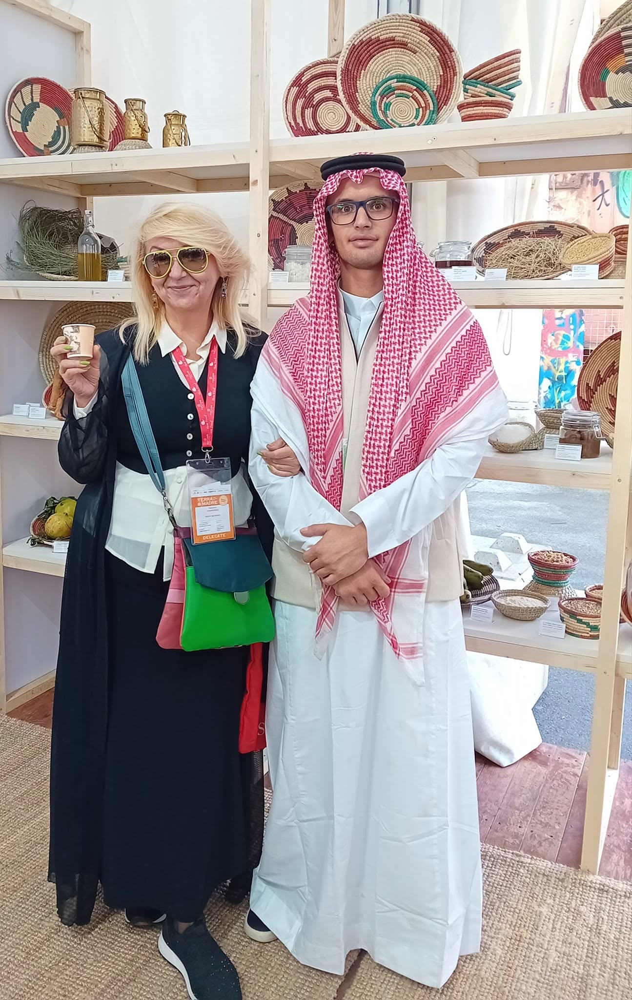
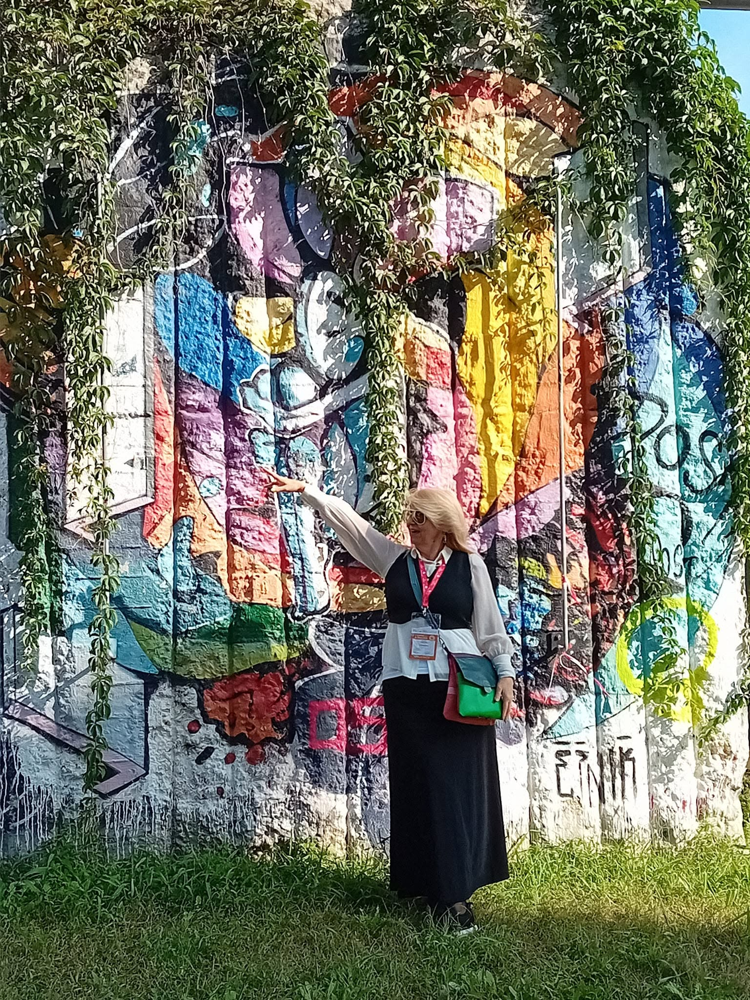
03
Вкусови што ја раскажуваат земјата
Низи суви пиперки, тутун, лук, циронки, па дрвени масички, штанд со храна, внатре е уште поубаво. Скоцкано. Постери од гостилници што веднаш ги познав: Вила Дихово, етно село Андревци во Годивје и Вила Радожда, со она непрегледно синило што на целиот павилјон му дава носталгична нота.
На менито денес, ми шепнаа готвачите — тројца вредни мускетари од слоуфудашката Алијанса — е рижото со јагнешко, канапеи со намаз од грав и суви пиперки, биено сирење и бакардан… Официјалното отворање веќе се случи, доминација на сувомеснатите чудесии на Гавриловски, и време е да уживаме во новата, толку посакувана „торинска“ реалност…
Инаку, врие од луѓе, гости и фанови на Тера Мадре и Слоу фуд: поминуваат, загледуваат, сакаат да вкусат. Најчестото прашање е врзано за тутунот, мислат дека е сушено месо.
Потоа се задржуваат на макало — чиста егзотика. Млацкаат и се облизуваат.
Ах да, и слатко од смокви — уште една егзотика. Се изненадив колку им беше непознат овој наш „знак на препознавање“. Сликам однадвор, одвнатре, лично е секако, ми поминуваат морници од гордоста што ете така, нашата напатена земја надвор од границите е среќна, посакувана и интересна…
Нашата земја, надвор од границите, беше среќна, посакувана и интересна.
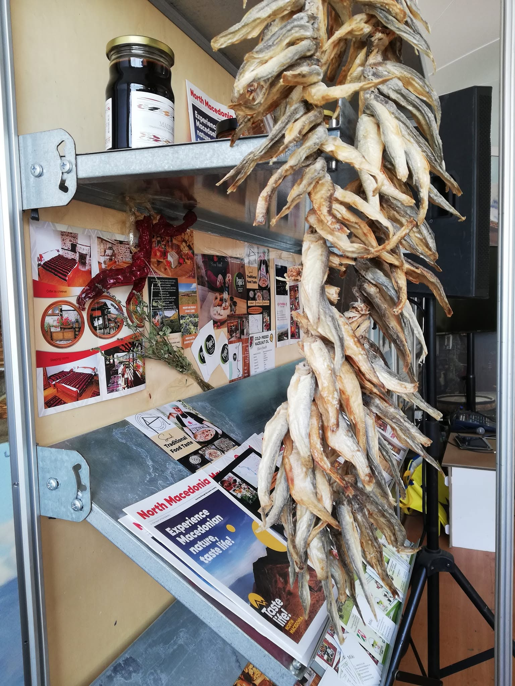
Вториот ден нашата мала група е пред сите во павилјонот. Подранивме — Марјан, Иво, Драгица и јас, тука сме на почетокот на денот и „отвораме“: јас го средувам изложбениот простор, лепам флаери со мед и чај, правам вистински македонски пачворк со најпрепознатливите работи од земјата, и се радувам што тоа веднаш го сликаат.
Чекор понатаму се контактите „тет-а-тет“ со луѓето. Мачкаме парчиња „лапни-голтни“ леб со ајвар и макало. Што поради храната, музиката, а можеби и поради нашите среќни лица, штандот експресно се наполни. Весело е и шарено, а од кујната веќе чури — во најава се тавче гравче, сендвичи со јагнешко, па јагнешка чорба, раванија со слатко од смокви, колач со вишни и цреши… Какви лезетлуци!
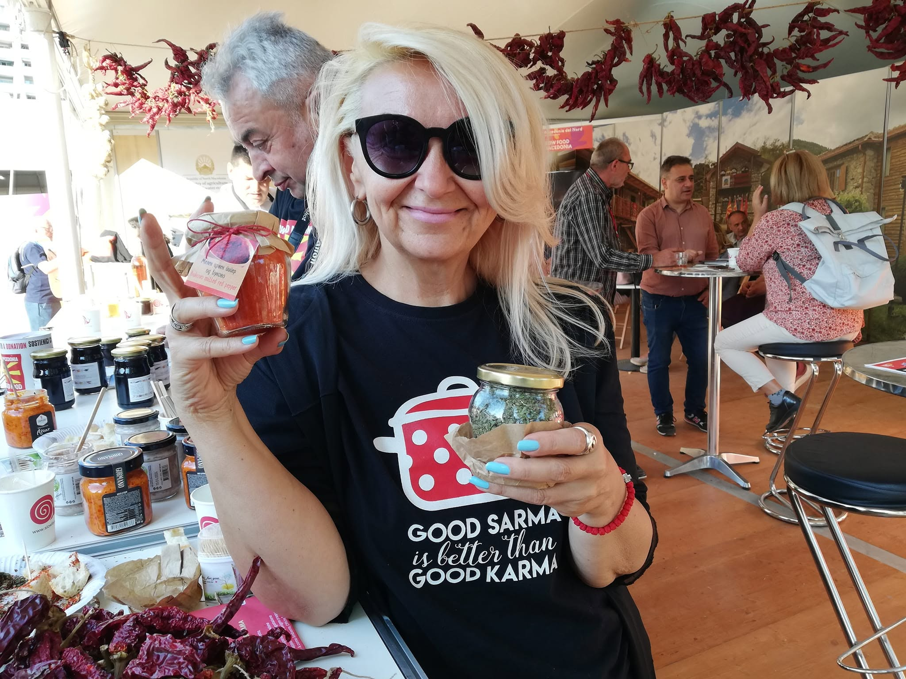
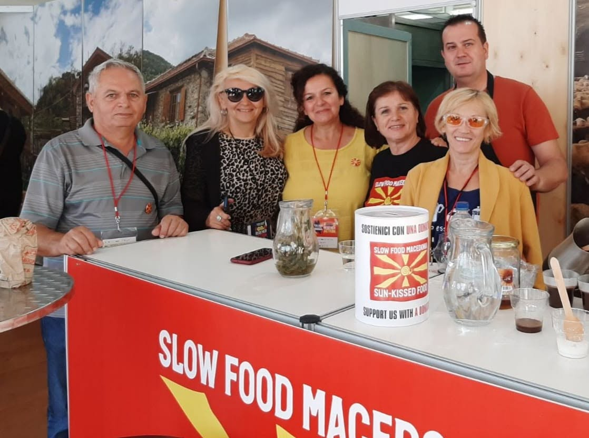
04
Кадри од Фелини
Одиме до прес-центар, да ја намирисаме атмосферата од нашата професија и да ги напишеме првите импресии, имам убави спомени од пред три години.
Како и сè, и ова „катче“ е поинакво, има неколку простории каде навистина можеш да работиш во тишина, ама под услов да имаш свој лаптоп. Нема компјутери, но традиционалното италијанско гостопримство е на ниво — има добро кафе, благо-солени залчиња за окрепнување, вода и вино. Ах, убав животе новинарски!
Продолжуваме до центарот на градот, нога пред нога. Само четири километри се, а пред нас се кадри од Фелини. Среќаваме интересни ликови, се протурнуваме низ пазарчиња кои наликуваат на нашата пластичарска улица. Но, Торино е волшебен. Ах, кралски граду, ти се поклонувам.
Торино е волшебен. Ах, кралски граду, ти се поклонувам.
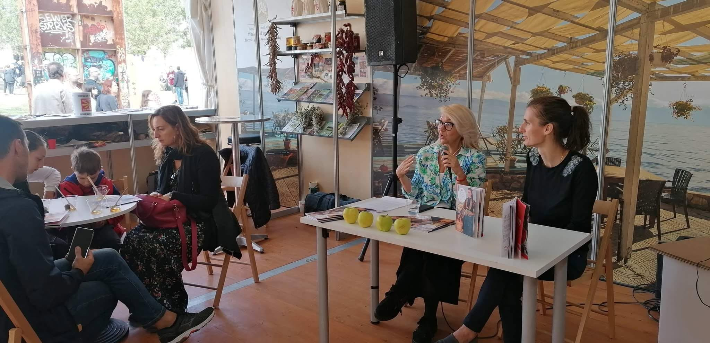
Пиеме „макијато нормале“ и ги гледаме минувачите. Шармот на Италија во движење. На масата до нас една двојка видно флертува (а што друго во земјата на љубовта?), гласно го пие виното, а келнерот ги облетува со разноразни чинии и чинивчиња. Веројатно ќе заврши со хепи енд, си мислам, а ние веќе се распрашуваме за назад, времето и минливоста се безмилосни. Лево, десно, овој пат имаме повеќе среќа и кога стигнавме до целта, во павилјонот е почната презентацијата на водичот Slow Wine со Слободан Чокревски. Ах, вино, божествена сончевино фатена во шише, кој останал имун на твоите убавини?
Потоа — чурек и Македонка Узунова со измесена блага свадбарска погача што ја разграбавме за миг.
05
Таму каде што започна приказната
Третиот ден е нашиот ред да го видиме Бра, романтично гратче откаде започна Слоу фуд приказната. Времето е дождливо, се запознаваме со првиот факултет за гастрономија на Слоу фуд, Банка за вино и пробуваме од најдобрите.
Истиот ден се случуваат уште неколку работилници: „Училишните градини — зелени училници на иднината“, „Учиме да сучиме“ со Наташа Неданоска, која знае да направи вистински спектакл од охридски комат. Патем, и сè што прави е спектакл и за душа и за стомак. Потоа „Новите дечки на стариот занает“, а секојдневно се и дегустации и оценување на овчеполското јагне, најпознат извозен бренд во Италија, во организација на земјоделската задруга „Еко Овчеполка“. Од кујната секој час се вади нешто ново, да те разгалат и полакомат со тарана со афион и сирење, јагнешка чорба, пелте од шира со јаболка и шумски плодови, јагнешки џигер со праз и суви пиперки, сендвичи со домашен колбас…
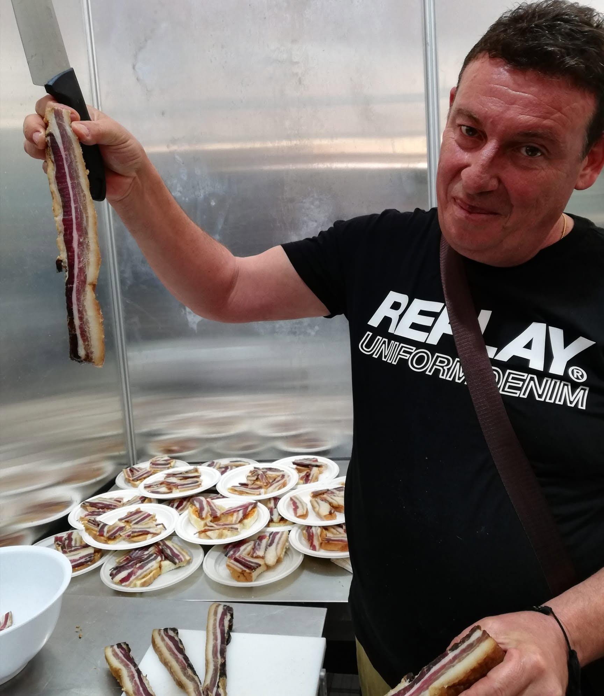
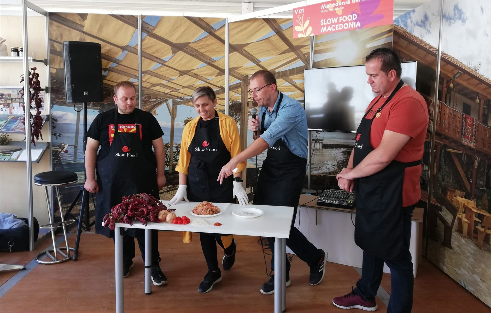
06
Кога целиот парк се собра кај нас
Четвртиот ден веќе почнав да ги бројам часовите, а недела е за мене посебна бидејќи ја имам презентацијата на Слоу фуд гостилници. Со Николче ги правиме последните подготовки, редам јаболка и водичи на маса и со помош на Елена и Јасна ја заокружуваме приказната. На крај — гушкање со сите гости…
Овој ден има и посебно мени. Мераклиско. Јаболка печени со кадаиф и крем од лешник, зелник, раванија со крем од ореви, јајчалник, тавче гравче со сланина. Следи претставување на новата пивска сцена, младата генерација на пивари и дегустација на занаетчиски произведени пива со Марјан Костадиновски.
Инаку, штандот никогаш не бил повесел, одекнуваат „Македонско девојче“ и разни мераклиски стихови. Се сврте и некое орце. Луѓе, врвулица, насмевки, вино, метеж… Едно време имав чувство дека целиот парк се паркирал токму кај нас.
Едно време имав чувство дека целиот парк се паркирал токму кај нас.
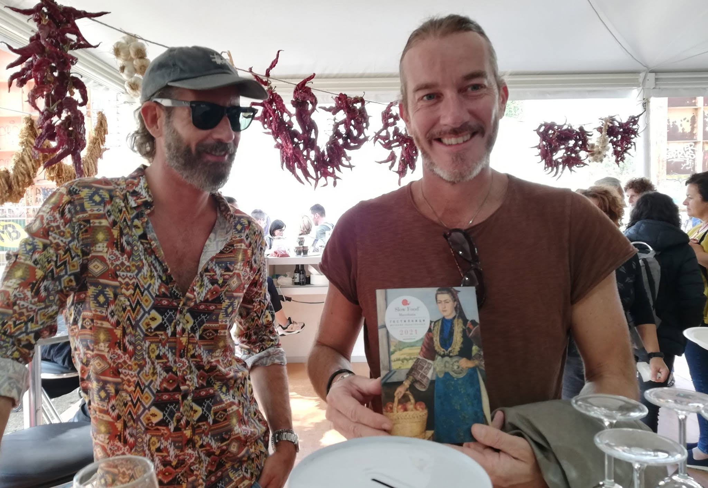
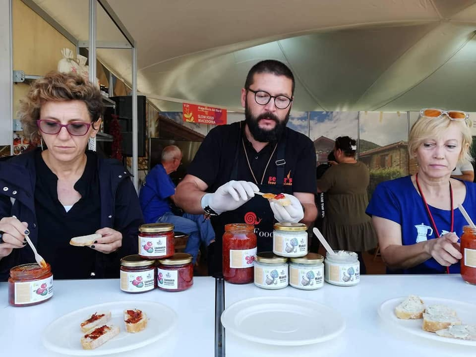
Се обидувам да фатам ритам, напоредно ставајќи фотографии на Фејсбук, да информирам колку е популарна нашата земја и да не пропуштам нешто од овие красотии што го поврзуваат светот. Се пие вино, црвено и бело, ама и чај планински, директно од кај нас. Како на лента — луѓе, муабети, смеа. Светот на дланка, а мое е наше и ваше. Со оваа космополитска мисла го дочекав и следниот, последен ден.
07
Милион мали слоуфудашки работи
Хајлајт на петтиот ден е грав, и тоа чорбест, во две варијанти, со сланина и посен. Потоа е реденка: јуфки, кадаиф, сендвичи со јагнешко… Подготовка на ширден, најпознатиот прилепски специјалитет со членовите на Слоу фуд Прилеп и Алхемија на вкусовите, и нови иновативни производи на млади производители со Пеце Клечкароски и Сезер фарм. Фантастични се, а забележувам и голем интерес за органскиот мед.
Повторно енергија што крева, многу нови ликови… Како што поминува времето, знам дека крајот на денот ќе значи и довршување на приказната.
На лице место ја потврдивме тезата дека љубовта низ уста влегува. Браво за готвачите, си велам по стоти пат, цареви сте Мајно, Димитар и Пеце.
Ама „браво“ и за сите нас. Се сплотивме со некоја заедничка интелигенција наречена татковина. Луѓето ми станаа блиски, како да сме биле заедно, на пример — во војска. Големо искуство и чувство дека бевме на висина на задача и земјата си ја претставивме во најдобро можно светло. Еве ја, уште блеска преку фотографии и доживеаното.
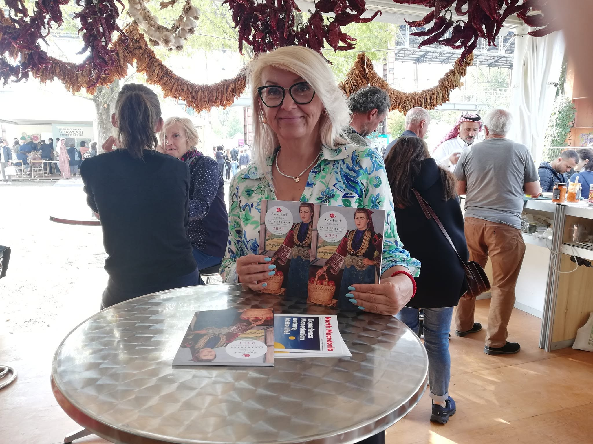
Постојат моменти кога потешко се опуштам, оштетена од кусок на времето, фокусирана на „мора“ и „треба“, но сепак се обидувам да фатам парченце од омиленото ми торинско небо, затоа што облаците се тродимензионални, а тоа е естетиката што ја љубам.
Кога повторно се наредивме во автобусот, секој на своето место, дојдов до интересен заклучок. Не паметам ништо друго освен насмевки. И да, ќе помислувам на сите луѓе со кои го делевме просторот, мислите и желбите.
Едноставно е.
Да се имаат пријатели не е една голема, туку милион мали слоуфудашки работи.
Вања Тодоровска